Compass Edge Detection
Introduction
This article’s objective is to illustrate concepts relating to Compass Edge Detection. The edge detection methods implemented in this article include: Prewitt, Sobel, Scharr, Kirsch and Isotropic.
Wasp: Scharr 3 x 3 x 8
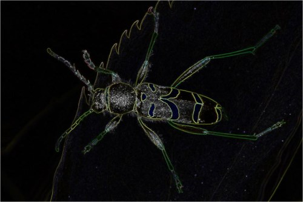
Building the Sample
There are no special requirements or instructions for building the sample source code.
Using the Sample Application
The sample source code accompanying this article includes a Windows Forms based sample application. When using the sample application users are able to load source/input images from and save result images to the local file system. The user interface provides a combobox which contains the supported methods of Compass Edge Detection. Selecting an item from the combobox results in the related Compass Edge Detection method being applied to the current source/input image. Supported methods are:
- Prewitt3x3x4 – 3×3 Prewitt kernels in 4 compass directions
- Prewitt3x3x8 – 3×3 Prewitt kernels in 8 compass directions
- Prewitt5x5x4 – 5×5 Prewitt kernels in 4 compass directions
- Sobel3x3x4 – 3×3 Sobel kernels in 4 compass directions
- Sobel3x3x8 – 3×3 Sobel kernels in 8 compass directions
- Sobel5x5x4 – 5×5 Sobel kernels in 4 compass directions
- Scharr3x3x4 – 3×3 Scharr kernels in 4 compass directions
- Scharr3x3x8 – 3×3 Scharr kernels in 8 compass directions
- Scharr5x5x4 – 5×5 Scharr kernels in 4 compass directions
- Kirsch3x3x4 – 3×3 Kirsch kernels in 4 compass directions
- Kirsch3x3x8 – 3×3 Kirsch kernels in 8 compass directions
- Isotropic3x3x4 – 3×3 Isotropic kernels in 4 compass directions
- Isotropic3x3x8 – 3×3 Isotropic kernels in 8 compass directions
The following image is a screenshot of the Compass Edge Detection Sample Application in action:
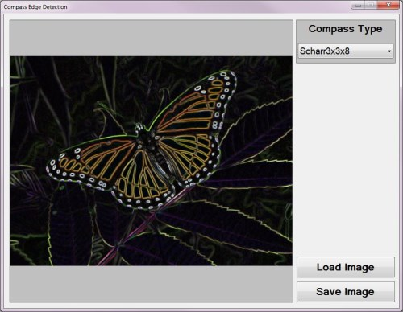
Bee: Isotropic 3 x 3 x 8
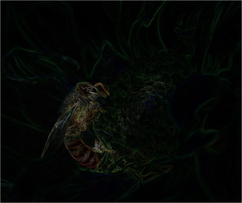
Compass Edge Detection Overview
Compass Edge Detection as a concept title can be explained through the implementation of compass directions. Compass Edge Detection can be implemented through image convolution, using multiple matrix kernels, each suited to detecting edges in a specific direction. Often the edge directions implemented are:
- North
- North East
- East
- South East
- South
- South West
- West
- North West
Each of the compass directions listed above differ by 45 degrees. Applying a kernel rotation of 45 degrees to an existing direction specific edge detection kernel results in a new kernel suited to detecting edges in the next compass direction.
Various edge detection kernels can be implemented in Compass Edge Detection. This article and accompanying sample source code implements the following kernel types:
Prey Mantis: Sobel 3 x 3 x 8
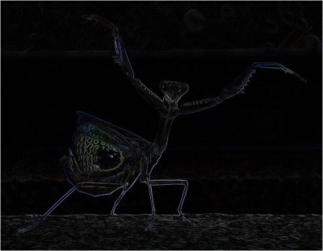
The steps required when implementing Compass Edge Detection can be described as follows:
- Determine the compass kernels. When an edge detection kernel suited to a specific direction is known, the edge detection kernels suited to the 7 remaining compass directions can be calculated. Rotating a kernel by 45 degrees around a central axis equates to the kernel suited to the next compass direction. As an example, if the edge detection kernel suited to detect edges in a northerly direction were to be rotated clockwise by 45 degrees around a central axis the result would be an edge detection kernel suited to edges in a North Easterly direction.
- Iterate source image pixels. Every pixel forming part of the source/input image should be iterated, implementing convolution using each of the compass kernels.
- Determine the most responsive kernel convolution. After having applied each compass kernel to the pixel currently being iterated, the most responsive compass kernel determines the output value. In other words, after having applied convolution eight times on the same pixel using each compass direction the output value should be set to the highest value calculated.
- Validate and set output result. Ensure that the highest value returned from convolution does not equate to less than 0 or more than 255. Should a value be less than zero the result should be assigned as zero. In a similar fashion, should a value exceed 255 the result should be assigned as 255.
Prewitt Compass Kernels
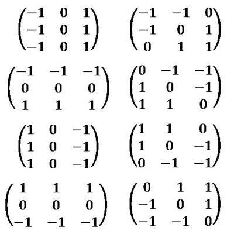
LadyBug: Prewitt 3 x 3 x 8
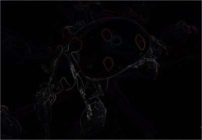
Rotating Convolution Kernels
Kernels can be rotated by implementing a rotate transform. Repeatedly rotating by 45 degrees results in calculating 8 kernels, each suited to a different direction. The algorithm implemented when performing a rotate transform can be expressed as follows:
Rotate Horizontal Algorithm
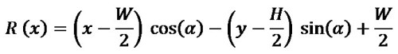
Rotate Vertical Algorithm
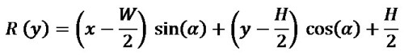
I’ve published an in-depth article on matrix rotation available here: C# How to: Image Transform Rotate
Butterfly: Sobel 3 x 3 x 8
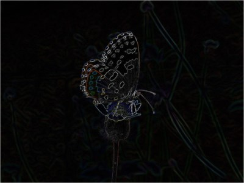
Implementing Kernel Rotation
The sample source code defines the RotateMatrix method. This method accepts as parameter a single kernel, defined as a two dimensional array of type double. In addition the method also expects as a parameter the degree to which the specified kernel should be rotated. The definition as follows:
public static double[, ,] RotateMatrix(double[,] baseKernel,
double degrees)
{
double[, ,] kernel = new double[(int )(360 / degrees),
baseKernel.GetLength(0), baseKernel.GetLength(1)];
int xOffset = baseKernel.GetLength(1) / 2;
int yOffset = baseKernel.GetLength(0) / 2;
for (int y = 0; y < baseKernel.GetLength(0); y++)
{
for (int x = 0; x < baseKernel.GetLength(1); x++)
{
for (int compass = 0; compass <
kernel.GetLength(0); compass++)
{
double radians = compass * degrees *
Math.PI / 180.0;
int resultX = (int)(Math.Round((x - xOffset) *
Math.Cos(radians) - (y - yOffset) *
Math.Sin(radians)) + xOffset);
int resultY = (int )(Math.Round((x - xOffset) *
Math.Sin(radians) + (y - yOffset) *
Math.Cos(radians)) + yOffset);
kernel[compass, resultY, resultX] =
baseKernel[y, x];
}
}
}
return kernel;
}
public static double[, ,] RotateMatrix(double[,] baseKernel, double degrees) { double[, ,] kernel = new double[(int )(360 / degrees), baseKernel.GetLength(0), baseKernel.GetLength(1)]; int xOffset = baseKernel.GetLength(1) / 2; int yOffset = baseKernel.GetLength(0) / 2; for (int y = 0; y < baseKernel.GetLength(0); y++) { for (int x = 0; x < baseKernel.GetLength(1); x++) { for (int compass = 0; compass < kernel.GetLength(0); compass++) { double radians = compass * degrees * Math.PI / 180.0; int resultX = (int)(Math.Round((x - xOffset) * Math.Cos(radians) - (y - yOffset) * Math.Sin(radians)) + xOffset); int resultY = (int )(Math.Round((x - xOffset) * Math.Sin(radians) + (y - yOffset) * Math.Cos(radians)) + yOffset); kernel[compass, resultY, resultX] = baseKernel[y, x]; } } } return kernel; }
Butterfly: Prewitt 3 x 3 x 8
Implementing Compass Edge Detection
The sample source code defines several kernels which are implemented in convolution. The following code snippet provides the definition of all kernels defined:
public static double[, ,] Prewitt3x3x4
{
get
{
double[,] baseKernel = new double[,]
{ { -1, 0, 1, },
{ -1, 0, 1, },
{ -1, 0, 1, }, };
double[, ,] kernel = RotateMatrix(baseKernel, 90);
return kernel;
}
}
public static double[, ,] Prewitt3x3x8
{
get
{
double[,] baseKernel = new double[,]
{ { -1, 0, 1, },
{ -1, 0, 1, },
{ -1, 0, 1, }, };
double[, ,] kernel = RotateMatrix(baseKernel, 45);
return kernel;
}
}
public static double[, ,] Prewitt5x5x4
{
get
{
double[,] baseKernel = new double[,]
{ { -2, -1, 0, 1, 2, },
{ -2, -1, 0, 1, 2, },
{ -2, -1, 0, 1, 2, },
{ -2, -1, 0, 1, 2, },
{ -2, -1, 0, 1, 2, }, };
double[, ,] kernel = RotateMatrix(baseKernel, 90);
return kernel;
}
}
public static double[, ,] Kirsch3x3x4
{
get
{
double[,] baseKernel = new double[,]
{ { -3, -3, 5, },
{ -3, 0, 5, },
{ -3, -3, 5, }, };
double[, ,] kernel = RotateMatrix(baseKernel, 90);
return kernel;
}
}
public static double[, ,] Kirsch3x3x8
{
get
{
double[,] baseKernel = new double[,]
{ { -3, -3, 5, },
{ -3, 0, 5, },
{ -3, -3, 5, }, };
double[, ,] kernel = RotateMatrix(baseKernel, 45);
return kernel;
}
}
public static double[, ,] Sobel3x3x4
{
get
{
double[,] baseKernel = new double[,]
{ { -1, 0, 1, },
{ -2, 0, 2, },
{ -1, 0, 1, }, };
double[, ,] kernel = RotateMatrix(baseKernel, 90);
return kernel;
}
}
public static double[, ,] Sobel3x3x8
{
get
{
double[,] baseKernel = new double[,]
{ { -1, 0, 1, },
{ -2, 0, 2, },
{ -1, 0, 1, }, };
double[, ,] kernel = RotateMatrix(baseKernel, 45);
return kernel;
}
}
public static double[, ,] Sobel5x5x4
{
get
{
double[,] baseKernel = new double[,]
{ { -5, -4, 0, 4, 5, },
{ -8, -10, 0, 10, 8, },
{ -10, -20, 0, 20, 10, },
{ -8, -10, 0, 10, 8, },
{ -5, -4, 0, 4, 5, }, };
double[, ,] kernel = RotateMatrix(baseKernel, 90);
return kernel;
}
}
public static double[, ,] Scharr3x3x4
{
get
{
double[,] baseKernel = new double[,]
{ { -1, 0, 1, },
{ -3, 0, 3, },
{ -1, 0, 1, }, };
double[, ,] kernel = RotateMatrix(baseKernel, 90);
return kernel;
}
}
public static double[, ,] Scharr3x3x8
{
get
{
double[,] baseKernel = new double[,]
{ { -1, 0, 1, },
{ -3, 0, 3, },
{ -1, 0, 1, }, };
double[, ,] kernel = RotateMatrix(baseKernel, 45);
return kernel;
}
}
public static double[, ,] Scharr5x5x4
{
get
{
double[,] baseKernel = new double[,]
{ { -1, -1, 0, 1, 1, },
{ -2, -2, 0, 2, 2, },
{ -3, -6, 0, 6, 3, },
{ -2, -2, 0, 2, 2, },
{ -1, -1, 0, 1, 1, }, };
double[, ,] kernel = RotateMatrix(baseKernel, 90);
return kernel;
}
}
public static double[, ,] Isotropic3x3x4
{
get
{
double[,] baseKernel = new double[,]
{ { -1, 0, 1, },
{ -Math.Sqrt(2), 0, Math.Sqrt(2), },
{ -1, 0, 1, }, };
double[, ,] kernel = RotateMatrix(baseKernel, 90);
return kernel;
}
}
public static double[, ,] Isotropic3x3x8
{
get
{
double[,] baseKernel = new double[,]
{ { -1, 0, 1, },
{ -Math.Sqrt(2), 0, Math.Sqrt(2), },
{ -1, 0, 1, }, };
double[, ,] kernel = RotateMatrix(baseKernel, 45);
return kernel;
}
}
public static double[, ,] Prewitt3x3x4 { get { double[,] baseKernel = new double[,] { { -1, 0, 1, }, { -1, 0, 1, }, { -1, 0, 1, }, }; double[, ,] kernel = RotateMatrix(baseKernel, 90); return kernel; } } public static double[, ,] Prewitt3x3x8 { get { double[,] baseKernel = new double[,] { { -1, 0, 1, }, { -1, 0, 1, }, { -1, 0, 1, }, }; double[, ,] kernel = RotateMatrix(baseKernel, 45); return kernel; } } public static double[, ,] Prewitt5x5x4 { get { double[,] baseKernel = new double[,] { { -2, -1, 0, 1, 2, }, { -2, -1, 0, 1, 2, }, { -2, -1, 0, 1, 2, }, { -2, -1, 0, 1, 2, }, { -2, -1, 0, 1, 2, }, }; double[, ,] kernel = RotateMatrix(baseKernel, 90); return kernel; } } public static double[, ,] Kirsch3x3x4 { get { double[,] baseKernel = new double[,] { { -3, -3, 5, }, { -3, 0, 5, }, { -3, -3, 5, }, }; double[, ,] kernel = RotateMatrix(baseKernel, 90); return kernel; } } public static double[, ,] Kirsch3x3x8 { get { double[,] baseKernel = new double[,] { { -3, -3, 5, }, { -3, 0, 5, }, { -3, -3, 5, }, }; double[, ,] kernel = RotateMatrix(baseKernel, 45); return kernel; } } public static double[, ,] Sobel3x3x4 { get { double[,] baseKernel = new double[,] { { -1, 0, 1, }, { -2, 0, 2, }, { -1, 0, 1, }, }; double[, ,] kernel = RotateMatrix(baseKernel, 90); return kernel; } } public static double[, ,] Sobel3x3x8 { get { double[,] baseKernel = new double[,] { { -1, 0, 1, }, { -2, 0, 2, }, { -1, 0, 1, }, }; double[, ,] kernel = RotateMatrix(baseKernel, 45); return kernel; } } public static double[, ,] Sobel5x5x4 { get { double[,] baseKernel = new double[,] { { -5, -4, 0, 4, 5, }, { -8, -10, 0, 10, 8, }, { -10, -20, 0, 20, 10, }, { -8, -10, 0, 10, 8, }, { -5, -4, 0, 4, 5, }, }; double[, ,] kernel = RotateMatrix(baseKernel, 90); return kernel; } } public static double[, ,] Scharr3x3x4 { get { double[,] baseKernel = new double[,] { { -1, 0, 1, }, { -3, 0, 3, }, { -1, 0, 1, }, }; double[, ,] kernel = RotateMatrix(baseKernel, 90); return kernel; } } public static double[, ,] Scharr3x3x8 { get { double[,] baseKernel = new double[,] { { -1, 0, 1, }, { -3, 0, 3, }, { -1, 0, 1, }, }; double[, ,] kernel = RotateMatrix(baseKernel, 45); return kernel; } } public static double[, ,] Scharr5x5x4 { get { double[,] baseKernel = new double[,] { { -1, -1, 0, 1, 1, }, { -2, -2, 0, 2, 2, }, { -3, -6, 0, 6, 3, }, { -2, -2, 0, 2, 2, }, { -1, -1, 0, 1, 1, }, }; double[, ,] kernel = RotateMatrix(baseKernel, 90); return kernel; } } public static double[, ,] Isotropic3x3x4 { get { double[,] baseKernel = new double[,] { { -1, 0, 1, }, { -Math.Sqrt(2), 0, Math.Sqrt(2), }, { -1, 0, 1, }, }; double[, ,] kernel = RotateMatrix(baseKernel, 90); return kernel; } } public static double[, ,] Isotropic3x3x8 { get { double[,] baseKernel = new double[,] { { -1, 0, 1, }, { -Math.Sqrt(2), 0, Math.Sqrt(2), }, { -1, 0, 1, }, }; double[, ,] kernel = RotateMatrix(baseKernel, 45); return kernel; } }
Notice how each property invokes the RotateMatrix method discussed in the previous section.
Butterfly: Scharr 3 x 3 x 8
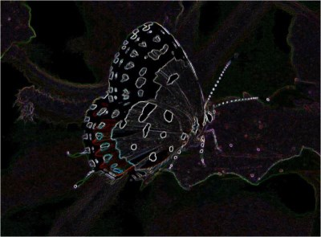
The CompassEdgeDetectionFilter method is defined as an extension method targeting the Bitmap class. The purpose of this method is to act as a wrapper method encapsulating the technical implementation. The definition as follows:
public static Bitmap CompassEdgeDetectionFilter(this Bitmap sourceBitmap,
CompassEdgeDetectionType compassType)
{
Bitmap resultBitmap = null;
switch (compassType)
{
case CompassEdgeDetectionType.Sobel3x3x4:
{
resultBitmap =
sourceBitmap.ConvolutionFilter(Matrix.Sobel3x3x4, 1.0 / 4.0);
} break;
case CompassEdgeDetectionType.Sobel3x3x8:
{
resultBitmap =
sourceBitmap.ConvolutionFilter(Matrix.Sobel3x3x8, 1.0/ 4.0);
} break;
case CompassEdgeDetectionType.Sobel5x5x4:
{
resultBitmap =
sourceBitmap.ConvolutionFilter(Matrix.Sobel5x5x4, 1.0/ 84.0);
} break;
case CompassEdgeDetectionType.Prewitt3x3x4:
{
resultBitmap =
sourceBitmap.ConvolutionFilter(Matrix.Prewitt3x3x4, 1.0 / 3.0);
} break;
case CompassEdgeDetectionType.Prewitt3x3x8:
{
resultBitmap =
sourceBitmap.ConvolutionFilter(Matrix.Prewitt3x3x8, 1.0/ 3.0);
} break;
case CompassEdgeDetectionType.Prewitt5x5x4:
{
resultBitmap =
sourceBitmap.ConvolutionFilter(Matrix.Prewitt5x5x4, 1.0 / 15.0);
} break;
case CompassEdgeDetectionType.Scharr3x3x4:
{
resultBitmap =
sourceBitmap.ConvolutionFilter(Matrix.Scharr3x3x4, 1.0 / 4.0);
} break;
case CompassEdgeDetectionType.Scharr3x3x8:
{
resultBitmap =
sourceBitmap.ConvolutionFilter(Matrix.Scharr3x3x8, 1.0 / 4.0);
} break;
case CompassEdgeDetectionType .Scharr5x5x4:
{
resultBitmap =
sourceBitmap.ConvolutionFilter(Matrix.Scharr5x5x4, 1.0 / 21.0);
} break;
case CompassEdgeDetectionType.Kirsch3x3x4:
{
resultBitmap =
sourceBitmap.ConvolutionFilter(Matrix.Kirsch3x3x4, 1.0 / 15.0);
} break;
case CompassEdgeDetectionType.Kirsch3x3x8:
{
resultBitmap =
sourceBitmap.ConvolutionFilter(Matrix.Kirsch3x3x8, 1.0 / 15.0);
} break;
case CompassEdgeDetectionType.Isotropic3x3x4:
{
resultBitmap =
sourceBitmap.ConvolutionFilter(Matrix.Isotropic3x3x4, 1.0 / 3.4);
} break;
case CompassEdgeDetectionType.Isotropic3x3x8:
{
resultBitmap =
sourceBitmap.ConvolutionFilter(Matrix.Isotropic3x3x8, 1.0 / 3.4);
} break;
}
return resultBitmap;
}
public static Bitmap CompassEdgeDetectionFilter(this Bitmap sourceBitmap, CompassEdgeDetectionType compassType) { Bitmap resultBitmap = null; switch (compassType) { case CompassEdgeDetectionType.Sobel3x3x4: { resultBitmap = sourceBitmap.ConvolutionFilter(Matrix.Sobel3x3x4, 1.0 / 4.0); } break; case CompassEdgeDetectionType.Sobel3x3x8: { resultBitmap = sourceBitmap.ConvolutionFilter(Matrix.Sobel3x3x8, 1.0/ 4.0); } break; case CompassEdgeDetectionType.Sobel5x5x4: { resultBitmap = sourceBitmap.ConvolutionFilter(Matrix.Sobel5x5x4, 1.0/ 84.0); } break; case CompassEdgeDetectionType.Prewitt3x3x4: { resultBitmap = sourceBitmap.ConvolutionFilter(Matrix.Prewitt3x3x4, 1.0 / 3.0); } break; case CompassEdgeDetectionType.Prewitt3x3x8: { resultBitmap = sourceBitmap.ConvolutionFilter(Matrix.Prewitt3x3x8, 1.0/ 3.0); } break; case CompassEdgeDetectionType.Prewitt5x5x4: { resultBitmap = sourceBitmap.ConvolutionFilter(Matrix.Prewitt5x5x4, 1.0 / 15.0); } break; case CompassEdgeDetectionType.Scharr3x3x4: { resultBitmap = sourceBitmap.ConvolutionFilter(Matrix.Scharr3x3x4, 1.0 / 4.0); } break; case CompassEdgeDetectionType.Scharr3x3x8: { resultBitmap = sourceBitmap.ConvolutionFilter(Matrix.Scharr3x3x8, 1.0 / 4.0); } break; case CompassEdgeDetectionType .Scharr5x5x4: { resultBitmap = sourceBitmap.ConvolutionFilter(Matrix.Scharr5x5x4, 1.0 / 21.0); } break; case CompassEdgeDetectionType.Kirsch3x3x4: { resultBitmap = sourceBitmap.ConvolutionFilter(Matrix.Kirsch3x3x4, 1.0 / 15.0); } break; case CompassEdgeDetectionType.Kirsch3x3x8: { resultBitmap = sourceBitmap.ConvolutionFilter(Matrix.Kirsch3x3x8, 1.0 / 15.0); } break; case CompassEdgeDetectionType.Isotropic3x3x4: { resultBitmap = sourceBitmap.ConvolutionFilter(Matrix.Isotropic3x3x4, 1.0 / 3.4); } break; case CompassEdgeDetectionType.Isotropic3x3x8: { resultBitmap = sourceBitmap.ConvolutionFilter(Matrix.Isotropic3x3x8, 1.0 / 3.4); } break; } return resultBitmap; }
Rose: Scharr 3 x 3 x 8
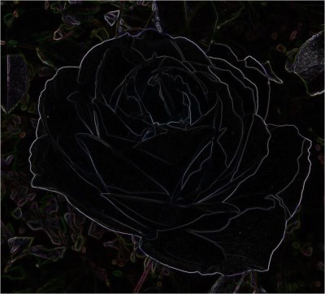
Notice from the code snippet listed above, each case statement invokes the ConvolutionFilter method. This method has been defined as an extension method targeting the Bitmap class. The ConvolutionFilter extension method performs the actual task of image convolution. This method implements each kernel passed as a parameter, the highest result value will be determined as the output value. The definition as follows:
private static Bitmap ConvolutionFilter(this Bitmap sourceBitmap,
double[,,] filterMatrix,
double factor = 1,
int bias = 0)
{
BitmapData sourceData = sourceBitmap.LockBits(new Rectangle(0, 0,
sourceBitmap.Width, sourceBitmap.Height),
ImageLockMode.ReadOnly,
PixelFormat.Format32bppArgb);
byte[] pixelBuffer = new byte [sourceData.Stride * sourceData.Height];
byte[] resultBuffer = new byte [sourceData.Stride * sourceData.Height];
Marshal.Copy(sourceData.Scan0, pixelBuffer, 0, pixelBuffer.Length);
sourceBitmap.UnlockBits(sourceData);
double blue = 0.0;
double green = 0.0;
double red = 0.0;
double blueCompass = 0.0;
double greenCompass = 0.0;
double redCompass = 0.0;
int filterWidth = filterMatrix.GetLength(1);
int filterHeight = filterMatrix.GetLength(0);
int filterOffset = (filterWidth-1) / 2;
int calcOffset = 0;
int byteOffset = 0;
for (int offsetY = filterOffset; offsetY <
sourceBitmap.Height - filterOffset; offsetY++)
{
for (int offsetX = filterOffset; offsetX <
sourceBitmap.Width - filterOffset; offsetX++)
{
blue = 0;
green = 0;
red = 0;
byteOffset = offsetY *
sourceData.Stride +
offsetX * 4;
for (int compass = 0; compass <
filterMatrix.GetLength(0); compass++)
{
blueCompass = 0.0;
greenCompass = 0.0;
redCompass = 0.0;
for (int filterY = -filterOffset;
filterY <= filterOffset; filterY++)
{
for (int filterX = -filterOffset;
filterX <= filterOffset; filterX++)
{
calcOffset = byteOffset +
(filterX * 4) +
(filterY * sourceData.Stride);
blueCompass += (double)(pixelBuffer[calcOffset]) *
filterMatrix[compass,
filterY + filterOffset,
filterX + filterOffset];
greenCompass += (double)(pixelBuffer[calcOffset + 1]) *
filterMatrix[compass,
filterY + filterOffset,
filterX + filterOffset];
redCompass += (double)(pixelBuffer[calcOffset + 2]) *
filterMatrix[compass,
filterY + filterOffset,
filterX + filterOffset];
}
}
blue = (blueCompass > blue ? blueCompass : blue);
green = (greenCompass > green ? greenCompass : green);
red = (redCompass > red ? redCompass : red);
}
blue = factor * blue + bias;
green = factor * green + bias;
red = factor * red + bias;
if(blue > 255)
{ blue = 255; }
else if(blue < 0)
{ blue = 0; }
if(green > 255)
{ green = 255; }
else if(green < 0)
{ green = 0; }
if(red > 255)
{ red = 255; }
else if(red < 0)
{ red = 0; }
resultBuffer[byteOffset] = (byte)(blue);
resultBuffer[byteOffset + 1] = (byte)(green);
resultBuffer[byteOffset + 2] = (byte)(red);
resultBuffer[byteOffset + 3] = 255;
}
}
Bitmap resultBitmap = new Bitmap(sourceBitmap.Width, sourceBitmap.Height);
BitmapData resultData = resultBitmap.LockBits(new Rectangle (0, 0,
resultBitmap.Width, resultBitmap.Height),
ImageLockMode.WriteOnly,
PixelFormat.Format32bppArgb);
Marshal.Copy(resultBuffer, 0, resultData.Scan0, resultBuffer.Length);
resultBitmap.UnlockBits(resultData);
return resultBitmap;
}
private static Bitmap ConvolutionFilter(this Bitmap sourceBitmap, double[,,] filterMatrix, double factor = 1, int bias = 0) { BitmapData sourceData = sourceBitmap.LockBits(new Rectangle(0, 0, sourceBitmap.Width, sourceBitmap.Height), ImageLockMode.ReadOnly, PixelFormat.Format32bppArgb); byte[] pixelBuffer = new byte [sourceData.Stride * sourceData.Height]; byte[] resultBuffer = new byte [sourceData.Stride * sourceData.Height]; Marshal.Copy(sourceData.Scan0, pixelBuffer, 0, pixelBuffer.Length); sourceBitmap.UnlockBits(sourceData); double blue = 0.0; double green = 0.0; double red = 0.0; double blueCompass = 0.0; double greenCompass = 0.0; double redCompass = 0.0; int filterWidth = filterMatrix.GetLength(1); int filterHeight = filterMatrix.GetLength(0); int filterOffset = (filterWidth-1) / 2; int calcOffset = 0; int byteOffset = 0; for (int offsetY = filterOffset; offsetY < sourceBitmap.Height - filterOffset; offsetY++) { for (int offsetX = filterOffset; offsetX < sourceBitmap.Width - filterOffset; offsetX++) { blue = 0; green = 0; red = 0; byteOffset = offsetY * sourceData.Stride + offsetX * 4; for (int compass = 0; compass < filterMatrix.GetLength(0); compass++) { blueCompass = 0.0; greenCompass = 0.0; redCompass = 0.0; for (int filterY = -filterOffset; filterY <= filterOffset; filterY++) { for (int filterX = -filterOffset; filterX <= filterOffset; filterX++) { calcOffset = byteOffset + (filterX * 4) + (filterY * sourceData.Stride); blueCompass += (double)(pixelBuffer[calcOffset]) * filterMatrix[compass, filterY + filterOffset, filterX + filterOffset]; greenCompass += (double)(pixelBuffer[calcOffset + 1]) * filterMatrix[compass, filterY + filterOffset, filterX + filterOffset]; redCompass += (double)(pixelBuffer[calcOffset + 2]) * filterMatrix[compass, filterY + filterOffset, filterX + filterOffset]; } } blue = (blueCompass > blue ? blueCompass : blue); green = (greenCompass > green ? greenCompass : green); red = (redCompass > red ? redCompass : red); } blue = factor * blue + bias; green = factor * green + bias; red = factor * red + bias; if(blue > 255) { blue = 255; } else if(blue < 0) { blue = 0; } if(green > 255) { green = 255; } else if(green < 0) { green = 0; } if(red > 255) { red = 255; } else if(red < 0) { red = 0; } resultBuffer[byteOffset] = (byte)(blue); resultBuffer[byteOffset + 1] = (byte)(green); resultBuffer[byteOffset + 2] = (byte)(red); resultBuffer[byteOffset + 3] = 255; } } Bitmap resultBitmap = new Bitmap(sourceBitmap.Width, sourceBitmap.Height); BitmapData resultData = resultBitmap.LockBits(new Rectangle (0, 0, resultBitmap.Width, resultBitmap.Height), ImageLockMode.WriteOnly, PixelFormat.Format32bppArgb); Marshal.Copy(resultBuffer, 0, resultData.Scan0, resultBuffer.Length); resultBitmap.UnlockBits(resultData); return resultBitmap; }
Rose: Isotropic 3 x 3 x 8
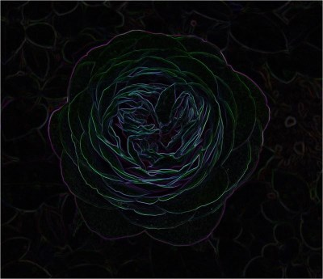
Sample Images
This article features a number of sample images. All featured images have been licensed allowing for reproduction. The following image files feature a sample images:
- Wasp – Licensed under the Creative Commons Attribution-Share Alike 3.0 Unported license. Download from Wikimedia
- Ladybug – Licensed under the Creative Commons Attribution-Share Alike 2.0 Generic license. Download from Wikipedia
- Ant – Released into the public domain by its author, Sean.hoyland. This applies worldwide. In some countries this may not be legally possible; if so: Sean.hoyland grants anyone the right to use this work for any purpose, without any conditions, unless such conditions are required by law. Download from Wikipedia
- Prey Mantis – Licensed under the Creative Commons Attribution-Share Alike 3.0 Unported license. Download from Wikipedia
- Bee – Licensed under the Creative Commons Attribution-Share Alike 3.0 Unported license. Download from Wikipedia
- Red Pierrot Butterfly 1- Licensed under the Creative Commons Attribution-Share Alike 3.0 Unported license. Download from WikiMedia
- Siproeta Epaphus Butterfly – Licensed under the Creative Commons Attribution 3.0 Unported license. Download from WikiMedia
- Red Pierrot Butterfly 2 – Licensed under the Creative Commons Attribution 2.0 Generic license. Download from Wikipedia
- Iceberg Rose – Licensed under the Creative Commons Attribution-Share Alike 3.0 Unported license. Attribution: Stan Shebs. Download from Wikipedia
- Heidi Klum Rose – Licensed under the Creative Commons Attribution-Share Alike 3.0 Unported, 2.5 Generic, 2.0 Generic and 1.0 Generic license. Download from Wikipedia
- Viceroy Butterfly – Licensed under the Creative Commons Attribution-Share Alike 3.0 Unported license. Attributed to D. Gordon E. Robertson. Download from Wikipedia
{kind=link}
{kind=link}
{kind=link}
{kind=link}
{kind=link}
_-_Nectaring.jpg){kind=link}
{kind=link}
.jpg){kind=link}
{kind=link}
_.jpg){kind=link}
{kind=link}
The Original Image

Butterfly: Isotropic 3 x 3 x 4
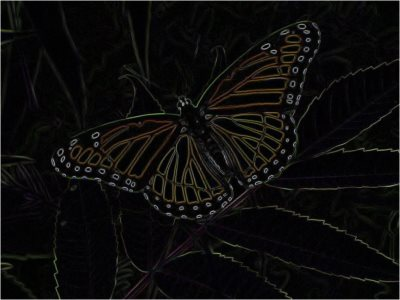
Butterfly: Isotropic 3 x 3 x 8
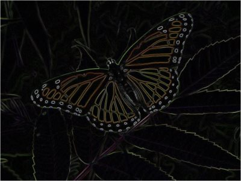
Butterfly: Kirsch 3 x 3 x 4
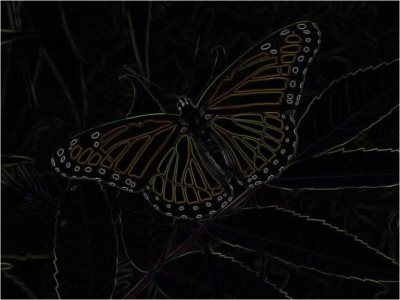
Butterfly: Kirsch 3 x 3 x 8
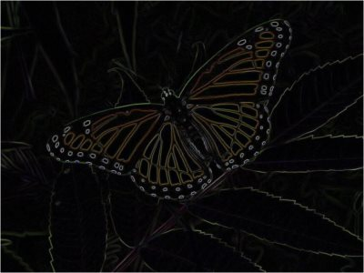
Butterfly: Prewitt 3 x 3 x 4
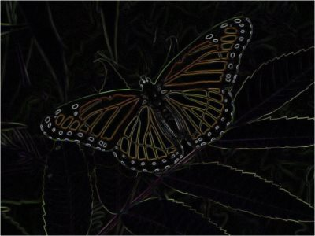
Butterfly: Prewitt 3 x 3 x 8
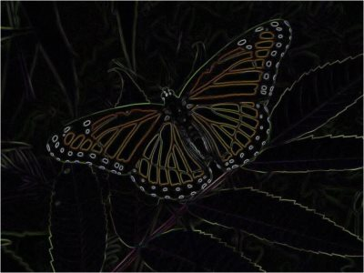
Butterfly: Prewitt 5 x 5 x 4
Butterfly: Scharr 3 x 3 x 4

Butterfly: Scharr 3 x 3 x 8
Butterfly: Scharr 5 x 5 x 4
Butterfly: Sobel 3 x 3 x 4
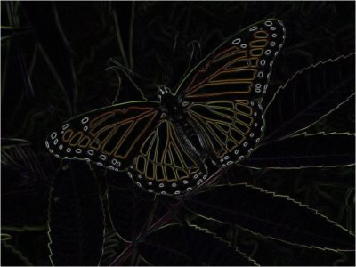
Butterfly: Sobel 3 x 3 x 8
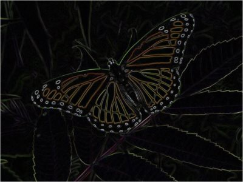
Butterfly: Sobel 5 x 5 x 4
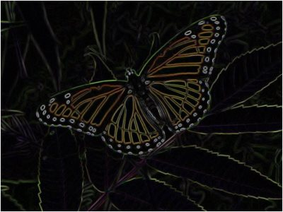
Source Code Files
- ExtBitmap.cs - Contains the definition of the CompassEdgeDetectionFilter and ConvolutionFilter extension methods.
- MainForm.cs - Windows Forms based sample application.
More Information
This article is based on an article originally posted on my blog: http://softwarebydefault.com/2013/06/22/compass-edge-detection/ If you have any questions/comments please feel free to make use of the Q&A section on this page, also please remember to rate this article.